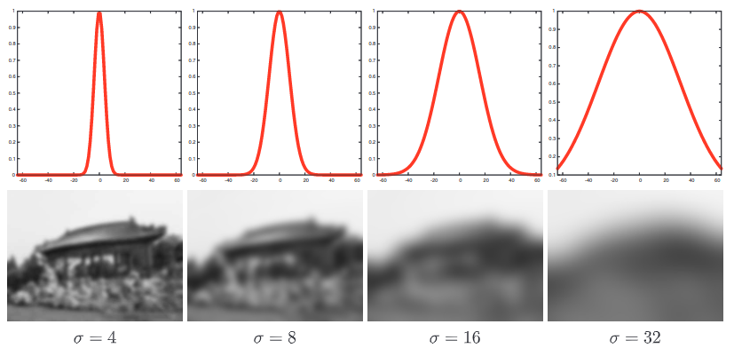
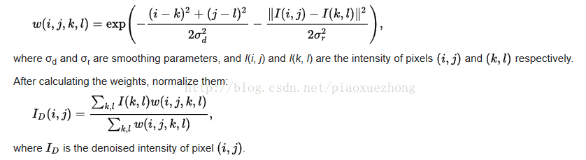
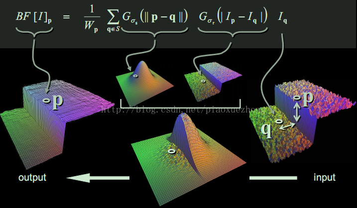
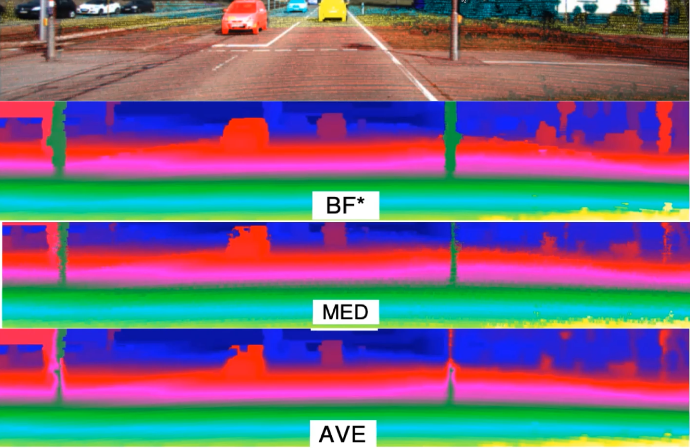

滤波器¶
高斯滤波¶
使用高斯卷积核对图片进行平滑（模糊）处理，是一种常见的线性图片过滤技术。每一个输出图片中的像素点都是其输入图片中周围邻居像素值的加权求和结果。其核心就是一个核函数的卷积操作，对图片进行低通滤波。高斯模糊（Gaussian blur / GB）图片滤波器定义如下：
这里$G_σ(x) $ 表示二维的高斯卷积核
高斯滤波是求相邻位置强度的加权平均值，其权值随到中心位置p的空间距离减小而减小。点q中心像素p的权重通过高斯分布G_{\sigma}(\|\mathbf{p}-\mathbf{q}\|)描述，这里的σ参数定义邻域的大小，也就是卷积核窗体大小，\|\mathbf{p}-\mathbf{q}\|为两个向量差的范数，即其有向线段的长度。这种影响的强度只取决于像素之间的空间距离，而不是它们的绝对位置值。例如，一个亮像素对相邻的暗像素有很大的影响，尽管这两个像素值差异很大。

上图是在不同标准差\sigma时的高斯线性滤波，越大的\sigma边缘模糊的更厉害，因为其平均值是通过更大的范围计算出来的。
双边滤波¶
双边滤波可以帮我们保留边缘信息，其实质也是计算邻居像素的加权平均和，非常类似于高斯卷积。不同之处在于双边滤波器在平滑的同时考虑到与邻边像素颜色值的差异，进而保留边缘信息。双边滤波器的关键思想是一个像素对另一个像素影响程度，不应该只和位置距离有关，还应该具有相似的像素颜色值。因此，双边滤波器是一种非线性滤波器。
即相等距离情况下，颜色值接近的像素点权重应当高一些，颜色值差异大的像素点权重应当小一些。于是，双边滤波bilateral filter（BF）的定义如下：
这里通过归一化因子W_{\mathbf{p}}保证像素的权重和为1.0：
双边滤波里的两个权重域的概念：**
空间域（spatial domain S）和像素范围域（range domain R）,这个是它跟高斯滤波等方法的最大不同点。
双边滤波的核函数是空间域核与像素范围域核的综合结果：在图像的平坦区域，像素值变化很小，对应的像素范围域权重接近于1，此时空间域权重起主要作用，相当于进行高斯模糊；在图像的边缘区域，像素值变化很大，像素范围域权重变大，从而保持了边缘的信息。

综合结论：
-
在图像的平坦区域，像素值变化很小，对应的像素范围域权重接近于1，此时空间域权重起主要作用，相当于进行高斯模糊；
-
在图像的边缘区域，像素值变化很大，像素范围域权重变大，从而保持了边缘的信息。
两个权重对图像的影响：

由于点云本身是稀疏且不连贯的，所以通过双边滤波对点云的RGB图做上采样后，将点云对应到RGB图，可以得到边缘更完整清晰的3D点云。BF为双边滤波，MED为中值滤波，AVE为均值滤波
